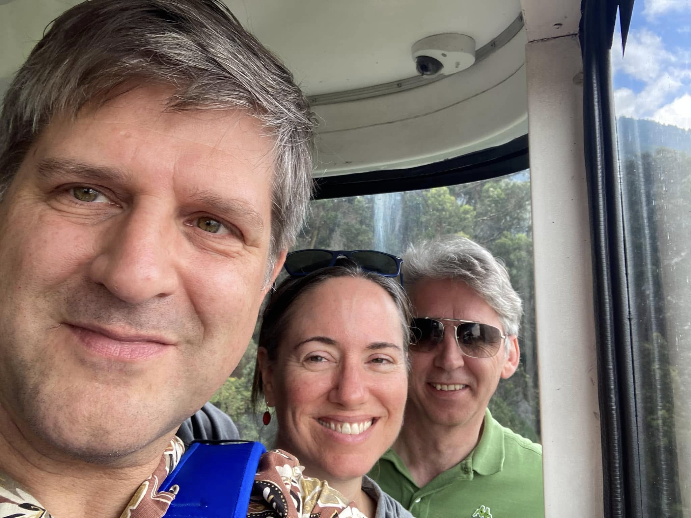

1 / 29
On the beach in San Francisco to celebrate Rachel's birthday.
2 / 29
Rachel and her sister Jenny looking cool in SF!
3 / 29
Many thanks to Janet for letting us stay at her place in Portland on our drive up to Seattle.
4 / 29
On Puget Sound in Seattle in April. A rare photo where Brad isn't covered in paint.
5 / 29
Rachel's sister came for a visit and we went to see a screening of the Triplets of Belleville with a live orchestra conducted by the composer who wrote the original soundtrack.
6 / 29

Goodby Gabby, you were a great cat.
7 / 29

Great to catch up with John Davenport this summer.
8 / 29
Camping in June with Jessica, Janis, and his sisters up in Trinity lake. Great paddle boarding!
9 / 29

Part 1 of our 25th wedding anniversary celebration was to go to Santa Cruz. Thanks to Mike and Heather for their hospitality.
10 / 29
Yes, August is hot in California. No, we were not going to let that keep us from seeing Willie Nelson, Bob Dylan and John Cougar. Legends.
11 / 29
We were busy in August. Got to see another legend, Lucinda Williams with our pal KC. At the end of the month we saw Anders Osborne. Epic month!
12 / 29

August was not over. For Brad's birthday we hiked, paddle boarded and went to an A's game at the Oakland Coliseum.
13 / 29

In September we went to Colombia to visit our friends Carolina, Erich and their daughter Sophia. Here's us with Erich in a cable car to get a good view of Bogota.
14 / 29

And here we are at Monserrate with a nice view of the city.
15 / 29
Downtown Bogota at the Plaza de Bolivar.
15 / 29
The museum of gold in Bogota is truly spectacular..and shiny.
16 / 29

Stopped in the village of Sesquile on our way to search for El Dorado.
17 / 29

At Guatavita in search of the lost city of gold.
18 / 29
Loads of beautiful flora and fauna in Colombia.
19 / 29

Posing in the lovely town of Guatavita.
20 / 29

Outside Bogota in the city of Chia at the famous restaurant Andres. Brad had a spectacular "Lomo al Trapo" (beef loin covered in salt and rosemary, wrapped in damp cloth and cooked in a bed of hot coals). The restaurant is a spectacle of tchotchkes.
21 / 29
Went to the (very cool) Salt Cathedral near Zipaquria, and while there Rachel tried her hand (and feet) at climbing. No surprise, she was good at it!
22 / 29
Bogota was full of trendy hip cafes with incredible coffee. This one was a bit touristy, but the roaster agreed to sell Brad some green unroasted coffee beans.
23 / 29
We went down to the Amazon with Carolina, Erich and Sophia. It is a tiny sliver of Colombia between Peru and Brazil.
24 / 29
We decided it would be fun to walk to Brazil!
25 / 29

We took a boat down the Amazon to reach our secluded biohotel.
26 / 29

One of the amazing things about the Amazon was being able to see river dolphins.
27 / 29

We also went to a place called monkey island. No idea why they called it that.
28 / 29

We got our new cat Sammy when we got back from Colombia. He has made himself right at home.
29 / 29

With Janis and David. Wishing you all a happy new year!!